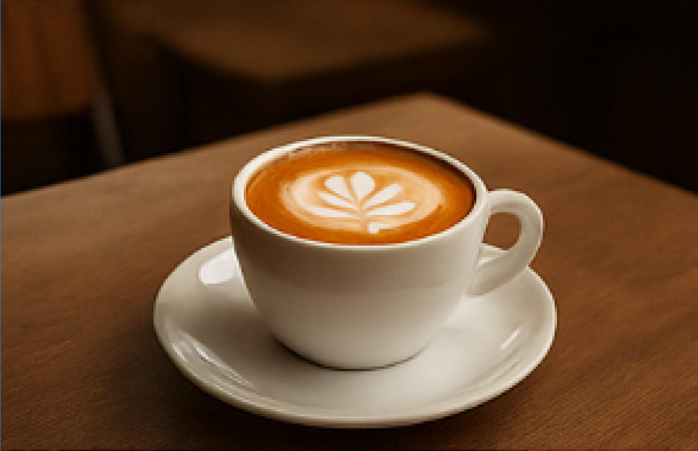
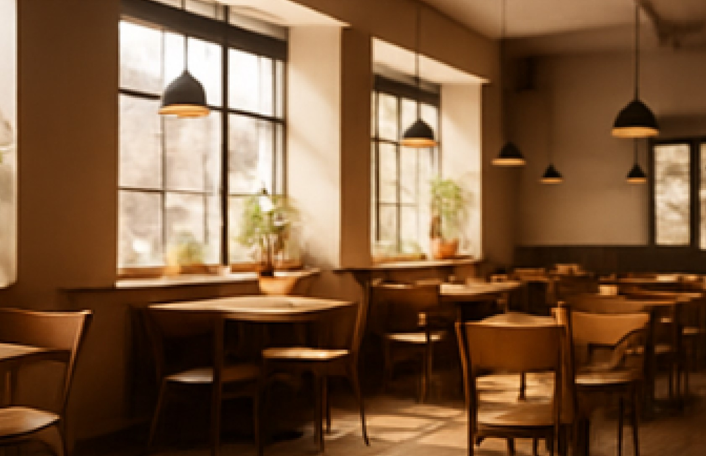
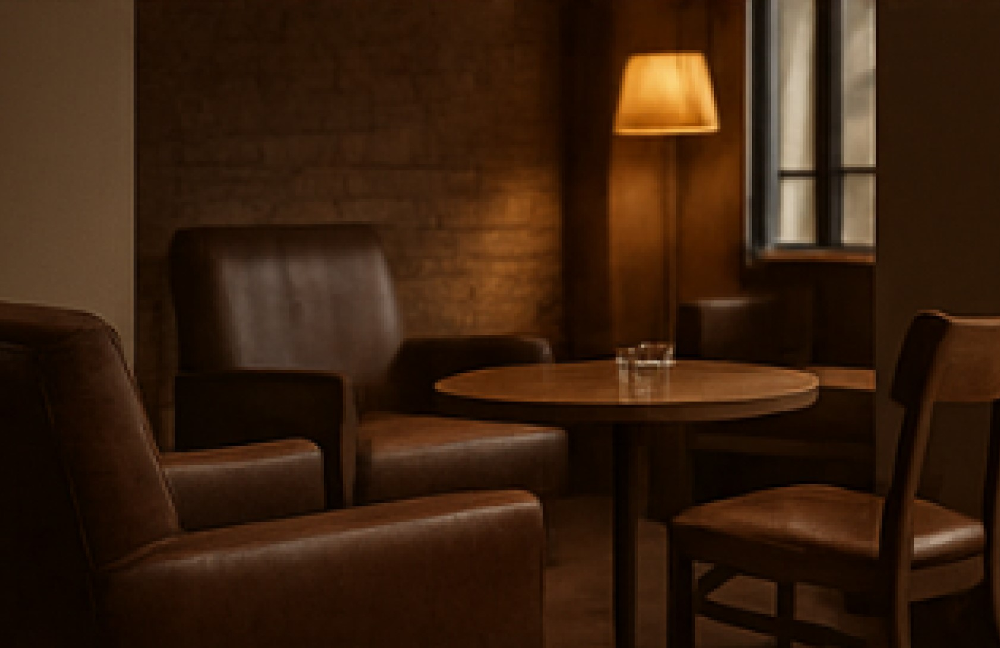
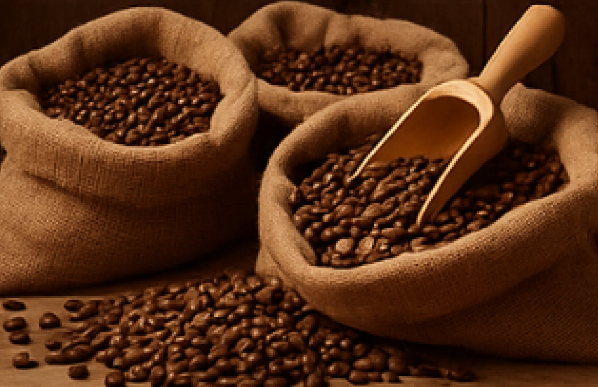

Блог

Мистецтво приготування капучино
15 квітня 2024
Капучино — це не просто кава, а справжнє мистецтво. У цій статті ми розповімо, як правильно збивати молоко, вибирати зерна та створити ідеальний баланс смаку.

Новий сезон: весняне меню
10 квітня 2024
Разом з приходом весни ми оновили меню: більше легких напоїв, сезонних смаків і нових десертів. Завітайте спробувати!

Створення затишної атмосфери
7 квітня 2024
У нашій кав’ярні кожна деталь — від меблів до музики — продумана для того, щоб ви могли розслабитись та насолодитися моментом.

Вибір зерен для ідеальної кави
2 квітня 2024
Якісна кава починається з правильного зерна. Дізнайтеся, які ми обираємо сорти, які створюють глибокий і збалансований смак.